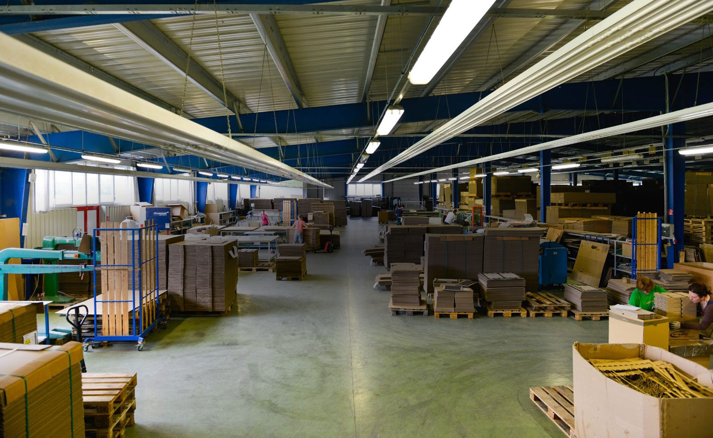
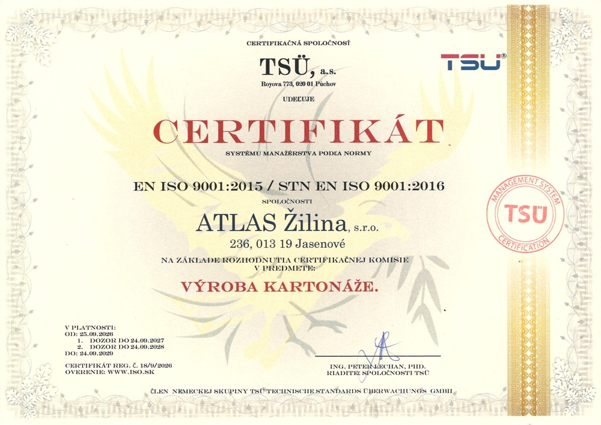

Začneme vaším produktom.
Prejdeme si použitie obalu, požadované rozmery, množstvo a termín.
Na trhu pôsobíme od roku 1996. Navrhujeme a vyrábame kartónové obaly na mieru pre malé aj veľké série. Spoznajte našu výrobu a ľudí, ktorí stoja za vaším obalom.

Vaše produkty balíme aj do 7-vrstvovej lepenky.
Vyrábame malé aj veľké série obalov. Konkrétne množstvo si dohodneme podľa zadania.
Navrhneme obal pre váš produkt. Používame kvalitnú recyklovateľnú lepenku.
Od prvého zadania k riešeniu pre váš produkt.
Prejdeme si použitie obalu, požadované rozmery, množstvo a termín.
Navrhneme riešenie na mieru. Môžeme vychádzať aj z vašej grafiky alebo technickej šablóny.
Po odsúhlasení zadania dohodneme výrobu a dodanie vašich obalov.
Certifikovaný systém manažérstva podľa EN ISO 9001:2015 pre výrobu kartonáže.

Pozrieť originál certifikátu ↗Spoznajte ľudí, ktorí stoja za vašimi obalmi. Od prvého zadania až po hotovú objednávku.

Vedúca výroby
+421 905 302 631mastalerzova@atlaszilina.sk
Ekonomická a personálna riaditeľka, majiteľka
+421 903 253 989lea.mastalerzova@atlaszilina.sk
Technická príprava výroby

Ekonómka
+421 41 7002 002ekonomka@atlaszilina.sk
Fakturantka
+421 41 7002 002faktury@atlaszilina.sk
Obchodná zástupkyňa
+421 903 244 194objednavky@atlaszilina.skMajiteľka
+421 903 506 199manduchova@mtmobaly.sk